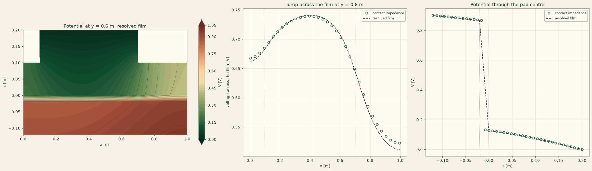

Docs › Examples › Current through a thin resistive film in a layered device
Electric currents · 3D
Current through a thin resistive film in a layered device
A current of 0.3 A crosses a layered device through a 20 mm resistive film between a base plate and a cover with a round contact pad; the film is resolved by the mesh once and replaced by a contact impedance once.
Run locally with OneSimulation. The example downloads are free. Running them requires an activated runtime. Runtime Alpha 0.2.1a7 · CPython 3.13 on macOS (Apple Silicon), Ubuntu 22.04 (x86-64), and Windows x64. Installation and activation · View pilot plans. Scope of the reference checks.

What it computes
OneSimulation reads both stacks as STEP assemblies whose parts become material regions and solves the steady current equation with quadratic tetrahedra. The thin model lets base and cover meet in the middle plane of the film, where the potential jumps with the conductance of the film and no current flows along it. The script that builds the STEP files comes with the notebook.
What it checks
The contact impedance gives the inlet voltage of the resolved film within 0.3 % (0.929 against 0.932 V) on a quarter fewer elements, and the voltage across the film below the pad (0.740 against 0.741 V) and at the far corner (0.461 against 0.448 V). Both carry exactly 0.3 A; the device needs 48 % more than the 0.63 V of the layers in series because the current gathers towards the pad.
The notebook
The complete notebook, cell by cell. Run it to produce the figures and the comparison printout.
Layered devices — sensors, resistive heaters, electrodes with an oxide skin — often contain one layer that is much thinner than the others but holds most of the resistance. Meshing it in 3D multiplies the number of elements. A contact impedance replaces the film by the face between its neighbours: the potential jumps across it and the normal current density follows the jump,
with no current along the face. This holds when the film is thin and conducts much less than the plates, so that the current crosses it almost perpendicularly.
The device is 1 m × 1 m. A base plate of 0.1 m and conductivity \(\sigma=1\) S/m, a film of \(d=20\) mm and \(\sigma_f=0.01\) S/m and a cover plate of 0.1 m and 1 S/m are stacked; a round pad of 0.3 m radius and 0.1 m height sits on the cover off the centre. The steady current solves
| face | condition |
|---|---|
inlet, bottom of the base | inflowing current density \(J_n=0.3\) A/m² |
contact, top of the pad | \(V=0\) |
| all other faces | \(J_n=0\) |
The resolved model meshes the film as its own body. The thin model lets base and cover meet in the middle plane of the film and puts the contact impedance there.
The two stacks come from the CAD files thin_resistive_film_stack_resolved.step and thin_resistive_film_stack_thin.step; the script thin_resistive_film_stack_geometry.py builds them with the CAD objects of OneSimulation. Both are three-dimensional models.
Reference. If the current crossed the film uniformly, the film alone would drop \(V_f=J\,d/\sigma_f=0.6\) V and the base \(J\,t/\sigma=0.03\) V (Ohm's law of the layers in series). The current gathers towards the pad, so more of it crosses the film there and the cover adds a spreading resistance; the resolved 3D model gives all of this and is the reference of the thin model, the series value a lower bound.
import numpy as np
from onesim.cad.d2 import Plane
from onesim.cad.exchange import load
from onesim.materials import regionwise
from onesim.meshing import TetrahedralMesher, interface
from onesim.numerics import Numerics
from onesim.numerics.fem import FiniteElement, Lagrange
from onesim.numerics.linear import SparseDirect
from onesim.physics.electrostatics import (
ContactImpedance,
FixedPotential,
NormalElectricDisplacement,
PoissonEquation,
ZeroNormalElectricDisplacement,
)
from onesim.simulation import Problem, Simulation
from onesim.visualization import plots, theme
theme.set()Geometry and mesh
load returns each stack with its parts as material regions and with the named faces base.inlet and cover.contact. Tetrahedra of 30 mm fill the film and its surroundings, 0.1 m elsewhere; the thin model needs the same size only to resolve the current entering the cover.
stacks = {
kind: load(f"thin_resistive_film_stack_{kind}.step")
for kind in ("resolved", "thin")
}
fine = lambda points: np.where(np.abs(points[:, 2] + 0.01) < 0.03, 0.03, 0.1)
meshes = {
kind: TetrahedralMesher(target_size=0.1, size_field=fine).generate(stack)
for kind, stack in stacks.items()
}
fig = plots.figure(1, 2, size=(14, 6))
plots.geometry(
stacks["resolved"],
selection={
"inlet, 0.3 A/m²": stacks["resolved"].boundaries["base.inlet"],
"contact, 0 V": stacks["resolved"].boundaries["cover.contact"],
},
labels=False,
camera=plots.Camera(elevation=25, azimuth=-60),
title="Base, film and cover with the pad",
ax=fig[0],
)
plots.mesh(
meshes["resolved"],
groups=("all",),
legend=False,
title=f"Resolved film: {meshes['resolved'].cell_count} tetrahedra",
ax=fig[1],
)
plots.show()Models
PoissonEquation with the conductivity in place of the permittivity is the steady current equation; regionwise gives the film of the resolved model its conductivity. ContactImpedance acts on the faces between base and cover of the thin model, which interface returns.
sigma, film, thickness, inflow = 1.0, 0.01, 0.02, 0.3
numerics = Numerics(
spatial=FiniteElement(element=Lagrange(order=2)), linear_solver=SparseDirect()
)
models, results = {}, {}
for kind, stack in stacks.items():
faces = stack.boundaries
model = PoissonEquation(
domain=stack.domain(),
permittivity=regionwise(
{"film": film} if kind == "resolved" else (), default=sigma, unit="S/m"
),
charge_density=0.0,
)
layer = (
(
ContactImpedance(
physics=model,
boundary=interface(meshes[kind], "base_cover"),
thickness=thickness,
conductivity=film,
),
)
if kind == "thin"
else ()
)
problem = Problem(
name=f"Layered device, {kind}",
geometry=stack,
physics=(model,),
boundary_conditions=(
NormalElectricDisplacement(
boundary=faces["base.inlet"], physics=model, value=-inflow
),
FixedPotential(boundary=faces["cover.contact"], physics=model, value=0.0),
ZeroNormalElectricDisplacement(
boundary=faces.all - faces["base.inlet"] - faces["cover.contact"],
physics=model,
),
)
+ layer,
)
models[kind] = model
results[kind] = Simulation(
problem=problem, mesh=meshes[kind], numerics=numerics
).solve_stationary()Results
The current through the contact, the voltage of the inlet face (its mean potential) and the jump across the film below the pad and at the far corner.
grid = np.linspace(0.02, 0.98, 25)
inlet = np.array([(x, y, -0.12) for x in grid for y in grid])
potential = {
kind: result.field(models[kind].potential) for kind, result in results.items()
}
voltage = {kind: field.evaluate(inlet).mean() for kind, field in potential.items()}
current = {
kind: -field.reaction(stacks[kind].boundaries["cover.contact"])
for kind, field in potential.items()
}
jump = {
kind: [
field.evaluate(np.array([[x, y, -0.02 + 1e-6]]))[0]
- field.evaluate(np.array([[x, y, -1e-6]]))[0]
for x, y in ((0.4, 0.6), (0.95, 0.05))
]
for kind, field in potential.items()
}
print(
f"series layers (film and base): {inflow * (thickness / film + 0.1 / sigma):.4f} V"
)
print(
"model current [A] inlet voltage [V] jump across the film below the pad [V] at the far corner [V] tetrahedra"
)
for kind in ("resolved", "thin"):
print(
f"{kind:10s} {current[kind]:12.5f} {voltage[kind]:19.5f} {jump[kind][0]:40.5f} {jump[kind][1]:23.5f} {meshes[kind].cell_count:12d}"
)
print(
f"thin model against the resolved film: inlet voltage {100 * (voltage['thin'] / voltage['resolved'] - 1):+.2f} %"
)The contact impedance gives the voltage of the resolved film within a fraction of a percent on fewer elements. The jump across the film is not uniform — below the pad it is half as large again as at the far corner, because the thin cover plate does not spread the current fully — and the whole device needs about 50 % more than the series layers. Yet the current crosses the film perpendicularly everywhere, which is all the contact impedance assumes.
Figure
The potential of the resolved model on the plane \(y=0.6\) m through the pad, the voltage across the film along that plane in both models (the pad spans \(x=0.1\) to \(0.7\) m), and the potential along the vertical line through the centre of the pad.
fig = plots.figure(1, 3, size=(21, 6))
plots.section(
potential["resolved"],
plane=Plane(origin=(0, 0.6, 0), normal=(0, 1, 0)),
limits=(0, 1.0),
contours=21,
subdivisions=2,
aspect=2.0,
label="V [V]",
xlabel="x [m]",
ylabel="z [m]",
title="Potential at y = 0.6 m, resolved film",
ax=fig[0],
)
x = np.linspace(0.005, 0.995, 199)
across = {
kind: field.evaluate(
np.column_stack((x, np.full_like(x, 0.6), np.full_like(x, -0.02 + 1e-6)))
)
- field.evaluate(np.column_stack((x, np.full_like(x, 0.6), np.full_like(x, -1e-6))))
for kind, field in potential.items()
}
plots.line(
points={"contact impedance": (x[::6], across["thin"][::6])},
reference={"resolved film": (x, across["resolved"])},
vlines=[0.1, 0.7],
xlabel="x [m]",
ylabel="voltage across the film [V]",
title="Jump across the film at y = 0.6 m",
ax=fig[1],
)
z = np.linspace(-0.12, 0.2, 641)
axis = np.column_stack((np.full_like(z, 0.4), np.full_like(z, 0.6), z))
plots.line(
points={"contact impedance": (z[::16], potential["thin"].evaluate(axis[::16]))},
reference={"resolved film": (z, potential["resolved"].evaluate(axis))},
vlines=[-0.02, 0.0],
xlabel="z [m]",
ylabel="V [V]",
title="Potential through the pad centre",
ax=fig[2],
)
plots.show()Going further
Raise the film conductivity towards that of the plates to see where the current starts to flow along the film and the contact impedance no longer holds, or move the pad in thin_resistive_film_stack_geometry.py to the corner.